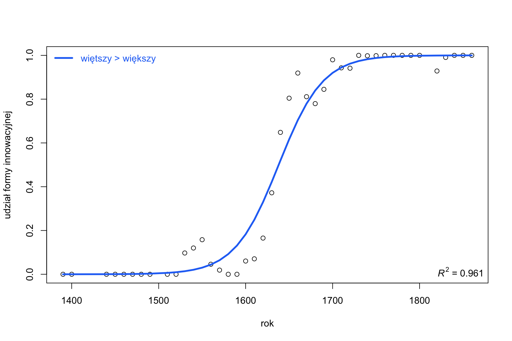
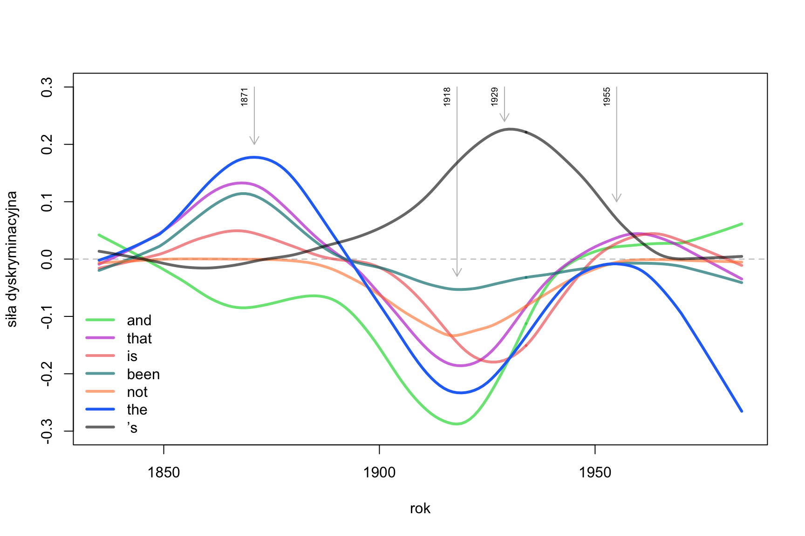
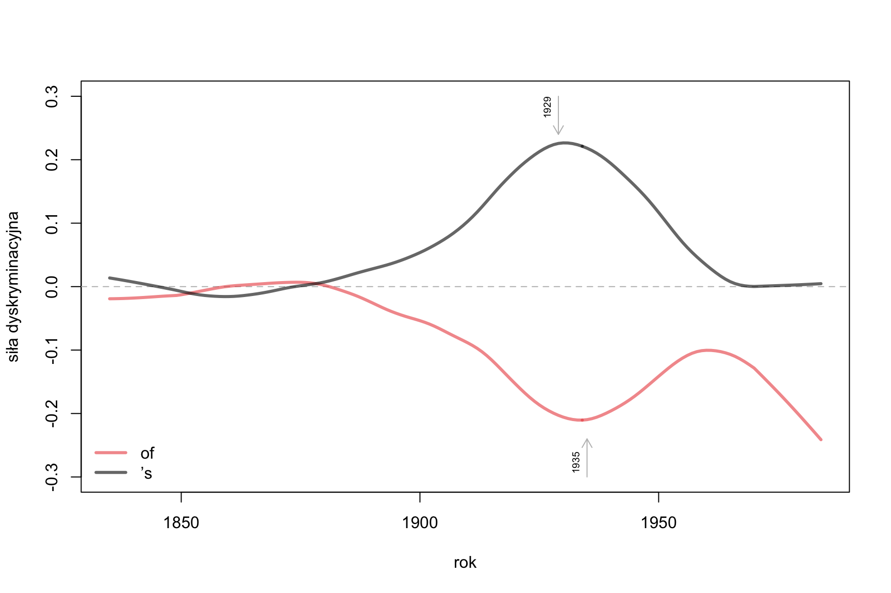
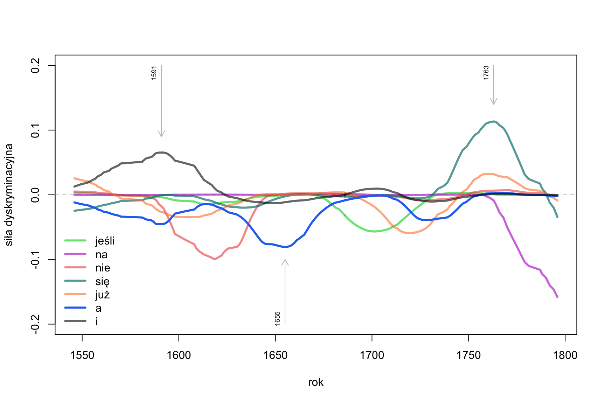
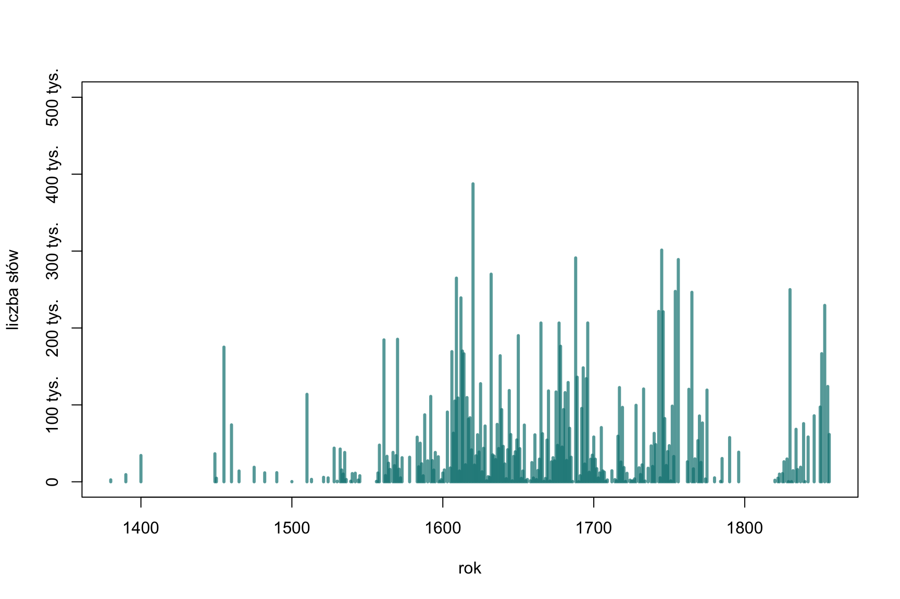

Narodowy Korpus Diachroniczny Polszczyzny
Projekt





<tok>
<orth>Ośmnastego</orth>
<lex><base>ośmnasty</base><ctag>adj:sg:gen:m1:pos</ctag></lex>
<lex><base>ośmnasty</base><ctag>adj:sg:gen:m2:pos</ctag></lex>
<lex disamb="1"><base>ośmnasty</base><ctag>adj:sg:gen:m3:pos</ctag></lex>
<lex><base>ośmnasty</base><ctag>adj:sg:gen:n:pos</ctag></lex>
<lex><base>ośmnasty</base><ctag>adj:sg:acc:m1:pos</ctag></lex>
<lex><base>ośmnasty</base><ctag>adj:sg:acc:m2:pos</ctag></lex>
</tok>
<tok>
<orth>lutego</orth>
<lex disamb="1"><base>luty</base><ctag>subst:sg:gen:m3</ctag></lex>
</tok>
<ns/>
<tok>
<orth>,</orth>
<lex disamb="1"><base>,</base><ctag>interp</ctag></lex>
</tok>
<tok>
<orth>roku</orth>
<lex disamb="1"><base>rok</base><ctag>subst:sg:gen:m3</ctag></lex>
<lex><base>rok</base><ctag>subst:sg:loc:m3</ctag></lex>
<lex><base>rok</base><ctag>subst:sg:voc:m3</ctag></lex>
</tok>
<tok>
<orth>1814</orth>
<lex disamb="1"><base>1814</base><ctag>tnum:integer</ctag></lex>
</tok>
<ns/>
<tok>
<orth>,</orth>
<lex disamb="1"><base>,</base><ctag>interp</ctag></lex>
</tok>
<tok>
<orth>jechał</orth>
<lex disamb="1"><base>jechać</base><ctag>praet:sg:m1:imperf</ctag></lex>
<lex><base>jechać</base><ctag>praet:sg:m2:imperf</ctag></lex>
<lex><base>jechać</base><ctag>praet:sg:m3:imperf</ctag></lex>
</tok>
<tok>
<orth>na</orth>
<lex disamb="1"><base>na</base><ctag>prep:loc</ctag></lex>
<lex><base>na</base><ctag>prep:acc</ctag></lex>
</tok>
<tok>
<orth>białym</orth>
<lex><base>biały</base><ctag>adj:sg:inst:m1:pos</ctag></lex>
<lex><base>biały</base><ctag>adj:sg:inst:m2:pos</ctag></lex>
<lex><base>biały</base><ctag>adj:sg:inst:m3:pos</ctag></lex>
<lex><base>biały</base><ctag>adj:sg:inst:n:pos</ctag></lex>
<lex><base>biały</base><ctag>adj:sg:loc:m1:pos</ctag></lex>
<lex disamb="1"><base>biały</base><ctag>adj:sg:loc:m2:pos</ctag></lex>
<lex><base>biały</base><ctag>adj:sg:loc:m3:pos</ctag></lex>
<lex><base>biały</base><ctag>adj:sg:loc:n:pos</ctag></lex>
<lex><base>biały</base><ctag>adj:pl:dat:m1:pos</ctag></lex>
<lex><base>biały</base><ctag>adj:pl:dat:m2:pos</ctag></lex>
<lex><base>biały</base><ctag>adj:pl:dat:m3:pos</ctag></lex>
<lex><base>biały</base><ctag>adj:pl:dat:f:pos</ctag></lex>
<lex><base>biały</base><ctag>adj:pl:dat:n:pos</ctag></lex>
</tok>
<tok>
<orth>koniu</orth>
<lex disamb="1"><base>koń</base><ctag>subst:sg:loc:m2</ctag></lex>
<lex><base>koń</base><ctag>subst:sg:voc:m2</ctag></lex>
</tok>Był jeden rycerz u niektórego króla, który barzo był króla rozgniewał.
I posłał ku królowi rycerze, aby mu gniew przeprosili. Tedy oni
rycerze za nim prosząc, ledwy mu łaskę uprosili tym obyczajem,
aby ku dworu królewskiemu zasię przyszedł jezno i pieszy a aby
z sobą przywiódł wiernego przyjaciela, i też krotofilnika,
i nieprzyjaciela niewiernego. A odszedszy jednacze powiedzieli
to rycerzowi. Usłyszawszy to, rycerz barzo sie zasmucił, jako by
to uczynić miał. I przydało sie czasu tego, że był jednego
pielgrzyma na noc przyjął, i rzekł tajemnie ku żonie swej: Wiem,
że pielgrzymowie miewają z sobą pieniądze, a przetoż jeźli to
chcesz taić, tedy ja zabiję tego pielgrzyma a pieniądze jego
pobierzem. A ona to taić obiecała. Gdyż tedy wszytcy spali,
wstawszy on rycerz przed świtanim obudził onego pielgrzyma i kazał
mu w drogę iść, a zabiwszy cielca, zrąbał go w sztuki i włożył
w wór. Potym, obudziwszy swą żonę, ukazał jej wór, mówiąc, żem
tylko głowę, nogi a ręce włożył w ten wór, a ciałom pochował
w stajni, ale ten wór w tym kącie pogrzebmy. A pogrzebszy on wór,
ukazał jej nieco pieniędzy swych, mieniąc, żeby je od tego
to pielgrzyma wziął. A gdyż był dzień, aby stanął przed królem,
tedy wziąwszy z sobą na prawą stronę psa, a dziecię na rękę,
a żonę na lewą stronę, szedł na zamek. A gdyż sie przybliżał
do zamku pana swego, włożył prawą nogę na psa swego, jakoby
jadąc, a drugą nogą szedł pieszki, a tak szedł jezno i pieszki
na zamek. A gdyż przyszedł przed króla, uźrzawszy go król
ze wszytkimi około stojącemi dziwował sie, i rzekł jemu król:
Gdzie jest twój przyjaciel nawierniejszy? Tedy rycerz wyjąwszy
miecz, zaciął psa swego, który skowycząc dla boleści uciekał,
zatym go zawołał, a pies zasie przyszedł ku niemu. I rzekł
rycerz: To jest mój przyjaciel nawierniejszy. Rzekł jemu król:
Prawdę mówisz. Ale gdzie jest twój krotofilnik?<milestone unit="matryca" n="K5457d"/>nie máſz wiáry przećiwko Pánu Bogu/ nie
<lb n="18"/>máſz vczćiwośći przećiwko Vrzędom/ nie máſz po=
<lb n="19"/>ſłuſzeńſtwá przećiwko Krolom/ prawdy/ wiáry/
<lb n="20"/>ſpráwiedliwośći miedzy námi nie máſz żadney/ peł=
<lb n="21"/>no wſzędźie niekokoiá y roſterku. Król, M., Derwojedowa, M., Górski, R. L., Gruszczyński, W., Opaliński, K., Potoniec, P., Woliński, M., Kieraś, W. and Eder, M. (2019). Narodowy Korpus Diachroniczny Polszczyzny. Projekt. Język Polski, 99: 92–101.